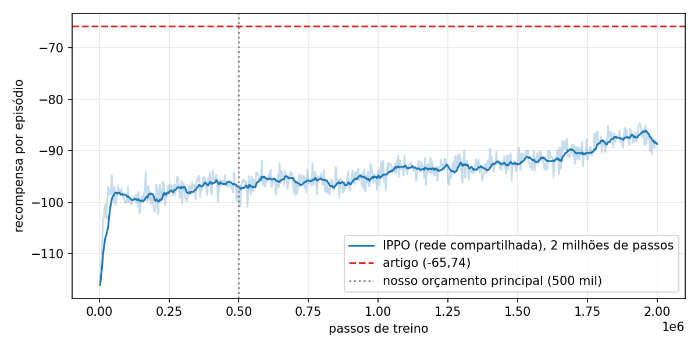
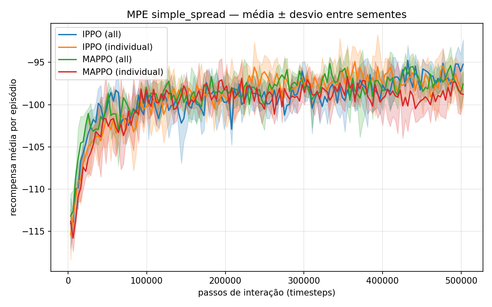

Este documento foi escrito para quem nunca leu o artigo nem mexeu no projeto. Leia na ordem: cada parte usa o que veio antes.
| Parte | O que você vai entender |
|---|---|
| 1. Conceitos básicos | O que é aprendizado por reforço, o que muda quando há vários agentes, e os termos que vão aparecer. |
| 2. O artigo | Qual problema ele resolve, o que propõe, como valida e quais resultados obteve. |
| 3. Aplicações no mundo real | Onde esse tipo de técnica é usado fora da sala de aula. |
| 4. O que nós fizemos | A reprodução do artigo: ambiente, algoritmos, configuração e resultados. |
| 5. A nossa modificação | O que mudamos, como, por que funciona e o que muda no mundo real. |
| 6. Itens do enunciado | Respostas prontas para cada pergunta do roteiro do professor. |
| 7. Perguntas prováveis | O que o professor pode perguntar e como responder. |
| 8. Glossário | Termos técnicos em uma linha. |
É um jeito de ensinar um programa por tentativa e erro. Ninguém diz ao programa a resposta certa; ele tenta algo, recebe uma nota e vai ajustando o comportamento para conseguir notas melhores.
Analogia: adestrar um cachorro. Ele faz algo, ganha petisco (recompensa) ou não. Com o tempo ele repete o que dá petisco.
MARL = Multi-Agent Reinforcement Learning, aprendizado por reforço multiagente. Vários agentes aprendem juntos no mesmo ambiente. Eles podem:
O que fica difícil: enquanto um agente aprende, os outros também estão mudando. Para cada agente, o "mundo" fica instável, porque o comportamento dos colegas muda o tempo todo. Além disso, cada agente geralmente só enxerga uma parte do mundo (observação parcial).
PPO (Proximal Policy Optimization) é um dos algoritmos de RL mais usados. Ele tem duas partes:
O detalhe do PPO é que ele muda a política aos poucos (o "clipping" limita o tamanho de cada atualização). Isso deixa o treino estável.
Ideia central de muitos algoritmos multiagente: durante o treino pode-se usar informação de todos os agentes (como um técnico que vê o campo inteiro); na hora de agir, cada agente usa só o que ele mesmo enxerga (como o jogador em campo). Assim o treino fica mais bem informado, mas o sistema final continua funcionando sem comunicação central.
| Título | MARLlib: A Scalable and Efficient Library for Multi-agent Reinforcement Learning |
|---|---|
| Autores | Siyi Hu, Yifan Zhong, Minquan Gao, Weixun Wang, Hao Dong, Zhihui Li, Xiaodan Liang, Xiaojun Chang, Yaodong Yang |
| Instituições | University of Technology Sydney, Peking University, NetEase, MBZUAI, entre outras |
| Periódico / ano | Journal of Machine Learning Research (JMLR), v. 24, n. 315, 2023 (publicado em agosto/2023) |
| Tipo de artigo | Artigo de software: não inventa um algoritmo novo; apresenta uma biblioteca (ferramenta) e mostra que ela funciona bem. |
Quem pesquisa MARL enfrentava dois obstáculos:
Converte qualquer ambiente para o mesmo formato, em três passos: (1) coloca informações extras, como o estado global, dentro da observação; (2) copia a recompensa para cada agente, para todos terem a mesma estrutura; (3) etiqueta todos os dados com o identificador do agente.
Cada agente guarda os próprios dados e treina a si mesmo. Quando um algoritmo precisa de informação dos colegas, ela é trocada numa etapa intermediária (pós-processamento), antes do treino. Com isso, as três grandes famílias de algoritmos cabem no mesmo código:
Define quais agentes usam a mesma rede neural. Três opções prontas:
A biblioteca ainda verifica automaticamente se a combinação escolhida é válida — por exemplo, impede usar um algoritmo só cooperativo num jogo competitivo.
Os números que usamos como referência vêm da Tabela 4 do artigo, para o ambiente MPE simple_spread:
| Algoritmo | Família | Recompensa no artigo |
|---|---|---|
| IPPO | Independente | −65,74 |
| MAPPO | Crítico centralizado | −66,26 |
| IQL / VDN / QMIX / VDPPO | Independente / decomposição | −197,6 / −190,5 / −189,3 / −214,0 |
Quanto mais perto de zero, melhor. IPPO e MAPPO estão entre os melhores nesse cenário.
A MARLlib unifica ambientes e algoritmos num só lugar, é mais rápida que as alternativas e serve como plataforma de ensino e pesquisa. Como trabalho futuro, os autores citam escalabilidade e eficiência, explicabilidade e robustez (Apêndice K).
Sempre que há várias máquinas ou programas tomando decisões ao mesmo tempo e precisando se coordenar, MARL é candidato. Uma biblioteca como a MARLlib acelera a pesquisa nessas áreas porque permite testar muitos algoritmos sem reescrever código.
| Área | Quem são os agentes | O que eles aprendem |
|---|---|---|
| Armazéns e logística | Robôs que buscam prateleiras (ex.: ambiente RWARE, suportado pela MARLlib) | Dividir pedidos e evitar congestionamento nos corredores |
| Drones e enxames | Cada drone | Cobrir uma área de busca e resgate sem colidir — é literalmente o que o simple_spread simula |
| Trânsito | Cada semáforo ou cada carro autônomo (ex.: MetaDrive, suportado) | Reduzir filas coordenando os cruzamentos |
| Energia elétrica | Inversores de painéis solares numa rede de distribuição (ex.: MAPDN, suportado) | Manter a tensão estável juntos |
| Jogos | Personagens controlados por IA (StarCraft — SMAC; futebol — Google Football) | Táticas de equipe; o AlphaStar da DeepMind chegou a nível de grão-mestre no StarCraft II |
| Indústria, finanças, saúde | Máquinas de uma linha de produção, robôs de negociação, sistemas de apoio | Citados pelo próprio artigo como direção futura (Apêndice K) |
Escolhemos IPPO e MAPPO:
| Item | Valor |
|---|---|
| Ferramentas | MARLlib (código oficial do artigo), Ray/RLlib 1.8, PyTorch 1.9, Python 3.8, Windows, só CPU |
| Rede neural | MLP (rede densa) com camadas de 128 e 256 neurônios |
| Hiperparâmetros | Os ajustados que a própria MARLlib fornece para o MPE: taxa de aprendizado 0,0005; clipping 0,3; bônus de entropia 0,01; 10 passadas por lote; lote de 128 episódios |
| Duração do treino | 500 mil passos por execução (≈ 20 mil episódios) |
| Repetições | 3 sementes aleatórias por configuração (o artigo usa 4) |
| Medida final | Média da recompensa nos últimos 10% do treino, depois média ± desvio padrão entre as 3 sementes |
| Total | 12 execuções (2 algoritmos × 2 formas de compartilhamento × 3 sementes), ~4h30 de computador |
O código cabe em quatro linhas de API da MARLlib:
| Algoritmo | Nosso resultado (rede compartilhada) | Artigo |
|---|---|---|
| IPPO | −96,4 ± 0,6 | −65,74 |
| MAPPO | −97,2 ± 0,8 | −66,26 |
Para testar se a diferença era falta de treino, rodamos o IPPO (rede compartilhada, semente 0) por 2 milhões de passos — o padrão da MARLlib, 4× o nosso orçamento. Levou 66 min.
| Ponto do treino | Recompensa (média da janela) |
|---|---|
| 500 mil passos | −96,7 |
| 1 milhão | −95,3 |
| 1,5 milhão | −92,6 |
| 2 milhões (últimos 10% do treino) | −87,5 |
| Artigo | −65,74 |

Testamos a estratégia de compartilhamento de rede — o mecanismo ③ do artigo:
Pergunta: dá para treinar mais rápido sem perder desempenho? Agentes iguais precisam de cérebros separados?
Mudando um único parâmetro da MARLlib: share_policy="all" (rede compartilhada) ou share_policy="individual" (uma rede por agente). Todo o resto ficou idêntico: mesmo ambiente, mesmos hiperparâmetros, mesma rede, mesmos 500 mil passos, mesmas 3 sementes. Assim, qualquer diferença vem só do compartilhamento. Medimos a recompensa final e o tempo de treino.
| Algoritmo | Rede | Recompensa final | Tempo por execução |
|---|---|---|---|
| IPPO | compartilhada | −96,4 ± 0,6 | 17,0 min |
| IPPO | uma por agente | −97,4 ± 2,1 | 28,7 min |
| MAPPO | compartilhada | −97,2 ± 0,8 | 17,8 min |
| MAPPO | uma por agente | −98,7 ± 1,5 | 30,5 min |

Curvas de aprendizado (média ± desvio entre 3 sementes). Eixo x: passos de treino. Eixo y: recompensa por episódio.
| Item | Resposta |
|---|---|
| Artigo | MARLlib, Hu et al., Journal of Machine Learning Research, v. 24, 2023 (dentro de 2022–2026). |
| Base de dados | Não há base fixa: os dados são gerados pela interação dos agentes com o ambiente MPE simple_spread (3 agentes, 3 marcos, 25 passos por episódio, 5 ações). |
| Tamanho da população | Não se aplica (não é inteligência de enxame). São 3 agentes. |
| % treino / teste | Não se aplica no formato supervisionado. A avaliação usa a recompensa nos episódios dos últimos 10% do treino. |
| Validação cruzada | Não. No lugar, repetimos cada configuração com 3 sementes aleatórias e reportamos média ± desvio. |
| Algoritmos | IPPO (independente) e MAPPO (crítico centralizado), ambos baseados em PPO. |
| Hiperparâmetros | Os ajustados que a MARLlib fornece para o MPE. Sem busca em grade, para manter a comparação com o artigo. |
| Transfer learning | Não. |
| Regularização / dropout | Bônus de entropia (0,01) e clipping do PPO (0,3). Sem dropout. |
| Aumento de dados | Não se aplica. |
| Desbalanceamento (SMOTE etc.) | Não se aplica (não é um problema de classificação). |
| Figuras de mérito | Recompensa média por episódio, curva de aprendizado, desvio entre sementes e tempo de treino. |
| Implementação e fontes | Código oficial da MARLlib (GitHub + documentação), Ray/RLlib, PyTorch; scripts próprios para rodar e analisar. |
| Modificação (2,0 pts) | Avaliação da estratégia de compartilhamento de rede (compartilhada × uma por agente), não medida no artigo: ~42% menos tempo sem perda de desempenho. |
Por que o resultado de vocês é pior que o do artigo?
Usamos o código e os hiperparâmetros oficiais. O artigo não informa quantos passos usou no MPE nem todos os detalhes do ambiente. Com um treino 4× mais longo (2 milhões de passos, o padrão da biblioteca) a diferença caiu de ~30 para ~22 pontos (seção 4.5): parte é falta de treino, o resto vem de detalhes não publicados. A diferença aparece nas duas configurações igualmente, então não afeta a comparação da nossa modificação.
Por que não usaram validação cruzada ou divisão treino/teste?
Porque em aprendizado por reforço não existe uma base de dados fixa para dividir. O equivalente é repetir o experimento com sementes aleatórias diferentes, que é o que o artigo também faz (4 sementes; nós usamos 3).
Se os 3 agentes usam a mesma rede, por que não fazem todos a mesma coisa?
Porque cada um recebe uma observação diferente — a posição dele e o que está ao redor dele. A mesma regra aplicada em lugares diferentes gera ações diferentes.
Por que IPPO e MAPPO deram praticamente o mesmo resultado?
O artigo também mostra isso (−65,7 contra −66,3). No simple_spread cada agente já enxerga os colegas e os marcos, então o crítico centralizado do MAPPO tem pouca informação extra a acrescentar.
Por que só esse ambiente e esses algoritmos?
É o cenário cooperativo clássico, usado pelo artigo e roda sem instalações pesadas. Os outros (StarCraft, MuJoCo, Football) exigem Linux, GPU ou softwares externos. IPPO e MAPPO são os melhores nele, segundo o artigo, e formam uma comparação limpa entre duas famílias.
A diferença de recompensa entre compartilhada e individual é significativa?
É pequena (1 a 1,5 ponto), da ordem do desvio. A conclusão que defendemos é "não perde desempenho", não "ganha muito". O ganho claro é no tempo (~42%) e na estabilidade (menor desvio).
Por que o treino com redes individuais é mais lento se a quantidade de dados é a mesma?
Porque são 3 redes para atualizar em vez de 1, cada uma com suas próprias passadas de otimização. O custo de processamento cresce com o número de redes.
Isso funcionaria com agentes diferentes?
Provavelmente não tão bem. Nesse caso o indicado é compartilhar por grupo (uma rede por tipo de agente). Testar isso seria um bom trabalho futuro.
O que é uma semente aleatória?
Um número que define os sorteios do treino (pesos iniciais da rede, posições iniciais no ambiente). Sementes diferentes geram treinos diferentes; repetir com várias mostra se o resultado é consistente ou foi sorte.
O que significa uma recompensa de −96?
É a soma das penalidades ao longo dos 25 passos de um episódio: distância dos marcos ao agente mais próximo mais colisões. Zero seria perfeito (todos os marcos cobertos desde o primeiro passo, sem colisões), o que é impossível porque os agentes começam longe.
| Termo | Em uma linha |
|---|---|
| Agente | Quem observa, age e aprende. |
| Ambiente | A simulação onde os agentes agem. |
| Recompensa | Nota numérica que indica se a ação foi boa. |
| Episódio | Uma partida completa (25 passos no nosso caso). |
| Passo (timestep) | Um instante em que cada agente escolhe uma ação. |
| Política | A regra (rede neural) que escolhe a ação a partir da observação. |
| Ator / crítico | Rede que decide / rede que avalia a situação. |
| PPO | Algoritmo de RL que melhora a política em passos pequenos e seguros. |
| IPPO | PPO em que cada agente aprende de forma independente. |
| MAPPO | PPO com crítico centralizado, que vê todos os agentes no treino. |
| CTDE | Treino com informação de todos, execução com informação local. |
| MARL | Aprendizado por reforço com vários agentes. |
| MPE | Ambiente 2D simples de partículas, muito usado em MARL. |
| Compartilhamento de política | Vários agentes usando a mesma rede neural. |
| Semente (seed) | Número que fixa os sorteios de um treino. |
| Hiperparâmetro | Configuração escolhida antes do treino (ex.: taxa de aprendizado). |
| Ray / RLlib | Bibliotecas de computação distribuída e de RL sobre as quais a MARLlib é construída. |